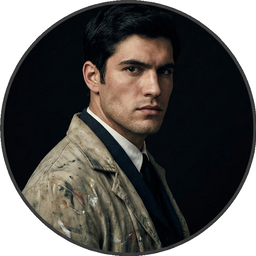
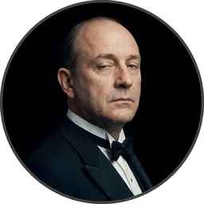

Cast of Characters
Click to hear their voice


CHAPTER I.
The studio was filled with the rich odour of roses, and when the light summer wind stirred amidst the trees of the garden, there came through the open door the heavy scent of the lilac, or the more delicate perfume of the pink-flowering thorn.
From the corner of the divan of Persian saddle-bags on which he was lying, smoking, as was his custom, innumerable cigarettes, Lord Henry Wotton could just catch the gleam of the honey-sweet and honey-coloured blossoms of a laburnum, whose tremulous branches seemed hardly able to bear the burden of a beauty so flamelike as theirs; and now and then the fantastic shadows of birds in flight flitted across the long tussore-silk curtains that were stretched in front of the huge window, producing a kind of momentary Japanese effect, and making him think of those pallid, jade-faced painters of Tokyo who, through the medium of an art that is necessarily immobile, seek to convey the sense of swiftness and motion. The sullen murmur of the bees shouldering their way through the long unmown grass, or circling with monotonous insistence round the dusty gilt horns of the straggling woodbine, seemed to make the stillness more oppressive. The dim roar of London was like the bourdon note of a distant organ.
In the centre of the room, clamped to an upright easel, stood the full-length portrait of a young man of extraordinary personal beauty, and in front of it, some little distance away, was sitting the artist himself, Basil Hallward, whose sudden disappearance some years ago caused, at the time, such public excitement and gave rise to so many strange conjectures.
As the painter looked at the gracious and comely form he had so skilfully mirrored in his art, a smile of pleasure passed across his face, and seemed about to linger there. But he suddenly started up, and closing his eyes, placed his fingers upon the lids, as though he sought to imprison within his brain some curious dream from which he feared he might awake.
“It is your best work, Basil, the best thing you have ever done,” said Lord Henry languidly. “You must certainly send it next year to the Grosvenor. The Academy is too large and too vulgar. Whenever I have gone there, there have been either so many people that I have not been able to see the pictures, which was dreadful, or so many pictures that I have not been able to see the people, which was worse. The Grosvenor is really the only place.”
“I don’t think I shall send it anywhere,” he answered, tossing his head back in that odd way that used to make his friends laugh at him at Oxford. “No, I won’t send it anywhere.”
Lord Henry elevated his eyebrows and looked at him in amazement through the thin blue wreaths of smoke that curled up in such fanciful whorls from his heavy, opium-tainted cigarette. “Not send it anywhere? My dear fellow, why? Have you any reason? What odd chaps you painters are! You do anything in the world to gain a reputation. As soon as you have one, you seem to want to throw it away. It is silly of you, for there is only one thing in the world worse than being talked about, and that is not being talked about. A portrait like this would set you far above all the young men in England, and make the old men quite jealous, if old men are ever capable of any emotion.”
“I know you will laugh at me,” he replied, “but I really can’t exhibit it. I have put too much of myself into it.”
Lord Henry stretched himself out on the divan and laughed.
“Yes, I knew you would; but it is quite true, all the same.”
“Too much of yourself in it! Upon my word, Basil, I didn’t know you were so vain; and I really can’t see any resemblance between you, with your rugged strong face and your coal-black hair, and this young Adonis, who looks as if he was made out of ivory and rose-leaves. Why, my dear Basil, he is a Narcissus, and you—well, of course you have an intellectual expression and all that. But beauty, real beauty, ends where an intellectual expression begins. Intellect is in itself a mode of exaggeration, and destroys the harmony of any face. The moment one sits down to think, one becomes all nose, or all forehead, or something horrid. Look at the successful men in any of the learned professions. How perfectly hideous they are! Except, of course, in the Church. But then in the Church they don’t think. A bishop keeps on saying at the age of eighty what he was told to say when he was a boy of eighteen, and as a natural consequence he always looks absolutely delightful. Your mysterious young friend, whose name you have never told me, but whose picture really fascinates me, never thinks. I feel quite sure of that. He is some brainless beautiful creature who should be always here in winter when we have no flowers to look at, and always here in summer when we want something to chill our intelligence. Don’t flatter yourself, Basil: you are not in the least like him.”
“You don’t understand me, Harry,” answered the artist. “Of course I am not like him. I know that perfectly well. Indeed, I should be sorry to look like him. You shrug your shoulders? I am telling you the truth. There is a fatality about all physical and intellectual distinction, the sort of fatality that seems to dog through history the faltering steps of kings. It is better not to be different from one’s fellows. The ugly and the stupid have the best of it in this world. They can sit at their ease and gape at the play. If they know nothing of victory, they are at least spared the knowledge of defeat. They live as we all should live—undisturbed, indifferent, and without disquiet. They neither bring ruin upon others, nor ever receive it from alien hands. Your rank and wealth, Harry; my brains, such as they are—my art, whatever it may be worth; Dorian Gray’s good looks—we shall all suffer for what the gods have given us, suffer terribly.”
“Dorian Gray? Is that his name?” asked Lord Henry, walking across the studio towards Basil Hallward.
“Yes, that is his name. I didn’t intend to tell it to you.”
“But why not?”
“Oh, I can’t explain. When I like people immensely, I never tell their names to any one. It is like surrendering a part of them. I have grown to love secrecy. It seems to be the one thing that can make modern life mysterious or marvellous to us. The commonest thing is delightful if one only hides it. When I leave town now I never tell my people where I am going. If I did, I would lose all my pleasure. It is a silly habit, I dare say, but somehow it seems to bring a great deal of romance into one’s life. I suppose you think me awfully foolish about it?”
“Not at all,” answered Lord Henry, “not at all, my dear Basil. You seem to forget that I am married, and the one charm of marriage is that it makes a life of deception absolutely necessary for both parties. I never know where my wife is, and my wife never knows what I am doing. When we meet—we do meet occasionally, when we dine out together, or go down to the Duke’s—we tell each other the most absurd stories with the most serious faces. My wife is very good at it—much better, in fact, than I am. She never gets confused over her dates, and I always do. But when she does find me out, she makes no row at all. I sometimes wish she would; but she merely laughs at me.”
“I hate the way you talk about your married life, Harry,” said Basil Hallward, strolling towards the door that led into the garden. “I believe that you are really a very good husband, but that you are thoroughly ashamed of your own virtues. You are an extraordinary fellow. You never say a moral thing, and you never do a wrong thing. Your cynicism is simply a pose.”
“Being natural is simply a pose, and the most irritating pose I know,” cried Lord Henry, laughing; and the two young men went out into the garden together and ensconced themselves on a long bamboo seat that stood in the shade of a tall laurel bush. The sunlight slipped over the polished leaves. In the grass, white daisies were tremulous.
After a pause, Lord Henry pulled out his watch. “I am afraid I must be going, Basil,” he murmured, “and before I go, I insist on your answering a question I put to you some time ago.”
“What is that?” said the painter, keeping his eyes fixed on the ground.
“You know quite well.”
“I do not, Harry.”
“Well, I will tell you what it is. I want you to explain to me why you won’t exhibit Dorian Gray’s picture. I want the real reason.”
“I told you the real reason.”
“No, you did not. You said it was because there was too much of yourself in it. Now, that is childish.”
“Harry,” said Basil Hallward, looking him straight in the face, “every portrait that is painted with feeling is a portrait of the artist, not of the sitter. The sitter is merely the accident, the occasion. It is not he who is revealed by the painter; it is rather the painter who, on the coloured canvas, reveals himself. The reason I will not exhibit this picture is that I am afraid that I have shown in it the secret of my own soul.”
Lord Henry laughed. “And what is that?” he asked.
“I will tell you,” said Hallward; but an expression of perplexity came over his face.
“I am all expectation, Basil,” continued his companion, glancing at him.
“Oh, there is really very little to tell, Harry,” answered the painter; “and I am afraid you will hardly understand it. Perhaps you will hardly believe it.”
Lord Henry smiled, and leaning down, plucked a pink-petalled daisy from the grass and examined it. “I am quite sure I shall understand it,” he replied, gazing intently at the little golden, white-feathered disk, “and as for believing things, I can believe anything, provided that it is quite incredible.”
The wind shook some blossoms from the trees, and the heavy lilac-blooms, with their clustering stars, moved to and fro in the languid air. A grasshopper began to chirrup by the wall, and like a blue thread a long thin dragon-fly floated past on its brown gauze wings. Lord Henry felt as if he could hear Basil Hallward’s heart beating, and wondered what was coming.
“The story is simply this,” said the painter after some time. “Two months ago I went to a crush at Lady Brandon’s. You know we poor artists have to show ourselves in society from time to time, just to remind the public that we are not savages. With an evening coat and a white tie, as you told me once, anybody, even a stock-broker, can gain a reputation for being civilized. Well, after I had been in the room about ten minutes, talking to huge overdressed dowagers and tedious academicians, I suddenly became conscious that some one was looking at me. I turned half-way round and saw Dorian Gray for the first time. When our eyes met, I felt that I was growing pale. A curious sensation of terror came over me. I knew that I had come face to face with some one whose mere personality was so fascinating that, if I allowed it to do so, it would absorb my whole nature, my whole soul, my very art itself. I did not want any external influence in my life. You know yourself, Harry, how independent I am by nature. I have always been my own master; had at least always been so, till I met Dorian Gray. Then—but I don’t know how to explain it to you. Something seemed to tell me that I was on the verge of a terrible crisis in my life. I had a strange feeling that fate had in store for me exquisite joys and exquisite sorrows. I grew afraid and turned to quit the room. It was not conscience that made me do so: it was a sort of cowardice. I take no credit to myself for trying to escape.”
“Conscience and cowardice are really the same things, Basil. Conscience is the trade-name of the firm. That is all.”
“I don’t believe that, Harry, and I don’t believe you do either. However, whatever was my motive—and it may have been pride, for I used to be very proud—I certainly struggled to the door. There, of course, I stumbled against Lady Brandon. ‘You are not going to run away so soon, Mr. Hallward?’ she screamed out. You know her curiously shrill voice?”
“Yes; she is a peacock in everything but beauty,” said Lord Henry, pulling the daisy to bits with his long nervous fingers.
“I could not get rid of her. She brought me up to royalties, and people with stars and garters, and elderly ladies with gigantic tiaras and parrot noses. She spoke of me as her dearest friend. I had only met her once before, but she took it into her head to lionize me. I believe some picture of mine had made a great success at the time, at least had been chattered about in the penny newspapers, which is the nineteenth-century standard of immortality. Suddenly I found myself face to face with the young man whose personality had so strangely stirred me. We were quite close, almost touching. Our eyes met again. It was reckless of me, but I asked Lady Brandon to introduce me to him. Perhaps it was not so reckless, after all. It was simply inevitable. We would have spoken to each other without any introduction. I am sure of that. Dorian told me so afterwards. He, too, felt that we were destined to know each other.”
“And how did Lady Brandon describe this wonderful young man?” asked his companion. “I know she goes in for giving a rapid précis of all her guests. I remember her bringing me up to a truculent and red-faced old gentleman covered all over with orders and ribbons, and hissing into my ear, in a tragic whisper which must have been perfectly audible to everybody in the room, the most astounding details. I simply fled. I like to find out people for myself. But Lady Brandon treats her guests exactly as an auctioneer treats his goods. She either explains them entirely away, or tells one everything about them except what one wants to know.”
“Poor Lady Brandon! You are hard on her, Harry!” said Hallward listlessly.
“My dear fellow, she tried to found a salon, and only succeeded in opening a restaurant. How could I admire her? But tell me, what did she say about Mr. Dorian Gray?”
“Oh, something like, ‘Charming boy—poor dear mother and I absolutely inseparable. Quite forget what he does—afraid he—doesn’t do anything—oh, yes, plays the piano—or is it the violin, dear Mr. Gray?’ Neither of us could help laughing, and we became friends at once.”
“Laughter is not at all a bad beginning for a friendship, and it is far the best ending for one,” said the young lord, plucking another daisy.
Hallward shook his head. “You don’t understand what friendship is, Harry,” he murmured—“or what enmity is, for that matter. You like every one; that is to say, you are indifferent to every one.”
“How horribly unjust of you!” cried Lord Henry, tilting his hat back and looking up at the little clouds that, like ravelled skeins of glossy white silk, were drifting across the hollowed turquoise of the summer sky. “Yes; horribly unjust of you. I make a great difference between people. I choose my friends for their good looks, my acquaintances for their good characters, and my enemies for their good intellects. A man cannot be too careful in the choice of his enemies. I have not got one who is a fool. They are all men of some intellectual power, and consequently they all appreciate me. Is that very vain of me? I think it is rather vain.”
“I should think it was, Harry. But according to your category I must be merely an acquaintance.”
“My dear old Basil, you are much more than an acquaintance.”
“And much less than a friend. A sort of brother, I suppose?”
“Oh, brothers! I don’t care for brothers. My elder brother won’t die, and my younger brothers seem never to do anything else.”
“Harry!” exclaimed Hallward, frowning.
“My dear fellow, I am not quite serious. But I can’t help detesting my relations. I suppose it comes from the fact that none of us can stand other people having the same faults as ourselves. I quite sympathize with the rage of the English democracy against what they call the vices of the upper orders. The masses feel that drunkenness, stupidity, and immorality should be their own special property, and that if any one of us makes an ass of himself, he is poaching on their preserves. When poor Southwark got into the divorce court, their indignation was quite magnificent. And yet I don’t suppose that ten per cent of the proletariat live correctly.”
“I don’t agree with a single word that you have said, and, what is more, Harry, I feel sure you don’t either.”
Lord Henry stroked his pointed brown beard and tapped the toe of his patent-leather boot with a tasselled ebony cane. “How English you are Basil! That is the second time you have made that observation. If one puts forward an idea to a true Englishman—always a rash thing to do—he never dreams of considering whether the idea is right or wrong. The only thing he considers of any importance is whether one believes it oneself. Now, the value of an idea has nothing whatsoever to do with the sincerity of the man who expresses it. Indeed, the probabilities are that the more insincere the man is, the more purely intellectual will the idea be, as in that case it will not be coloured by either his wants, his desires, or his prejudices. However, I don’t propose to discuss politics, sociology, or metaphysics with you. I like persons better than principles, and I like persons with no principles better than anything else in the world. Tell me more about Mr. Dorian Gray. How often do you see him?”
“Every day. I couldn’t be happy if I didn’t see him every day. He is absolutely necessary to me.”
“How extraordinary! I thought you would never care for anything but your art.”
“He is all my art to me now,” said the painter gravely. “I sometimes think, Harry, that there are only two eras of any importance in the world’s history. The first is the appearance of a new medium for art, and the second is the appearance of a new personality for art also. What the invention of oil-painting was to the Venetians, the face of Antinous was to late Greek sculpture, and the face of Dorian Gray will some day be to me. It is not merely that I paint from him, draw from him, sketch from him. Of course, I have done all that. But he is much more to me than a model or a sitter. I won’t tell you that I am dissatisfied with what I have done of him, or that his beauty is such that art cannot express it. There is nothing that art cannot express, and I know that the work I have done, since I met Dorian Gray, is good work, is the best work of my life. But in some curious way—I wonder will you understand me?—his personality has suggested to me an entirely new manner in art, an entirely new mode of style. I see things differently, I think of them differently. I can now recreate life in a way that was hidden from me before. ‘A dream of form in days of thought’—who is it who says that? I forget; but it is what Dorian Gray has been to me. The merely visible presence of this lad—for he seems to me little more than a lad, though he is really over twenty—his merely visible presence—ah! I wonder can you realize all that that means? Unconsciously he defines for me the lines of a fresh school, a school that is to have in it all the passion of the romantic spirit, all the perfection of the spirit that is Greek. The harmony of soul and body—how much that is! We in our madness have separated the two, and have invented a realism that is vulgar, an ideality that is void. Harry! if you only knew what Dorian Gray is to me! You remember that landscape of mine, for which Agnew offered me such a huge price but which I would not part with? It is one of the best things I have ever done. And why is it so? Because, while I was painting it, Dorian Gray sat beside me. Some subtle influence passed from him to me, and for the first time in my life I saw in the plain woodland the wonder I had always looked for and always missed.”
“Basil, this is extraordinary! I must see Dorian Gray.”
Hallward got up from the seat and walked up and down the garden. After some time he came back. “Harry,” he said, “Dorian Gray is to me simply a motive in art. You might see nothing in him. I see everything in him. He is never more present in my work than when no image of him is there. He is a suggestion, as I have said, of a new manner. I find him in the curves of certain lines, in the loveliness and subtleties of certain colours. That is all.”
“Then why won’t you exhibit his portrait?” asked Lord Henry.
“Because, without intending it, I have put into it some expression of all this curious artistic idolatry, of which, of course, I have never cared to speak to him. He knows nothing about it. He shall never know anything about it. But the world might guess it, and I will not bare my soul to their shallow prying eyes. My heart shall never be put under their microscope. There is too much of myself in the thing, Harry—too much of myself!”
“Poets are not so scrupulous as you are. They know how useful passion is for publication. Nowadays a broken heart will run to many editions.”
“I hate them for it,” cried Hallward. “An artist should create beautiful things, but should put nothing of his own life into them. We live in an age when men treat art as if it were meant to be a form of autobiography. We have lost the abstract sense of beauty. Some day I will show the world what it is; and for that reason the world shall never see my portrait of Dorian Gray.”
“I think you are wrong, Basil, but I won’t argue with you. It is only the intellectually lost who ever argue. Tell me, is Dorian Gray very fond of you?”
The painter considered for a few moments. “He likes me,” he answered after a pause; “I know he likes me. Of course I flatter him dreadfully. I find a strange pleasure in saying things to him that I know I shall be sorry for having said. As a rule, he is charming to me, and we sit in the studio and talk of a thousand things. Now and then, however, he is horribly thoughtless, and seems to take a real delight in giving me pain. Then I feel, Harry, that I have given away my whole soul to some one who treats it as if it were a flower to put in his coat, a bit of decoration to charm his vanity, an ornament for a summer’s day.”
“Days in summer, Basil, are apt to linger,” murmured Lord Henry. “Perhaps you will tire sooner than he will. It is a sad thing to think of, but there is no doubt that genius lasts longer than beauty. That accounts for the fact that we all take such pains to over-educate ourselves. In the wild struggle for existence, we want to have something that endures, and so we fill our minds with rubbish and facts, in the silly hope of keeping our place. The thoroughly well-informed man—that is the modern ideal. And the mind of the thoroughly well-informed man is a dreadful thing. It is like a bric-à-brac shop, all monsters and dust, with everything priced above its proper value. I think you will tire first, all the same. Some day you will look at your friend, and he will seem to you to be a little out of drawing, or you won’t like his tone of colour, or something. You will bitterly reproach him in your own heart, and seriously think that he has behaved very badly to you. The next time he calls, you will be perfectly cold and indifferent. It will be a great pity, for it will alter you. What you have told me is quite a romance, a romance of art one might call it, and the worst of having a romance of any kind is that it leaves one so unromantic.”
“Harry, don’t talk like that. As long as I live, the personality of Dorian Gray will dominate me. You can’t feel what I feel. You change too often.”
“Ah, my dear Basil, that is exactly why I can feel it. Those who are faithful know only the trivial side of love: it is the faithless who know love’s tragedies.” And Lord Henry struck a light on a dainty silver case and began to smoke a cigarette with a self-conscious and satisfied air, as if he had summed up the world in a phrase. There was a rustle of chirruping sparrows in the green lacquer leaves of the ivy, and the blue cloud-shadows chased themselves across the grass like swallows. How pleasant it was in the garden! And how delightful other people’s emotions were!—much more delightful than their ideas, it seemed to him. One’s own soul, and the passions of one’s friends—those were the fascinating things in life. He pictured to himself with silent amusement the tedious luncheon that he had missed by staying so long with Basil Hallward. Had he gone to his aunt’s, he would have been sure to have met Lord Goodbody there, and the whole conversation would have been about the feeding of the poor and the necessity for model lodging-houses. Each class would have preached the importance of those virtues, for whose exercise there was no necessity in their own lives. The rich would have spoken on the value of thrift, and the idle grown eloquent over the dignity of labour. It was charming to have escaped all that! As he thought of his aunt, an idea seemed to strike him. He turned to Hallward and said, “My dear fellow, I have just remembered.”
“Remembered what, Harry?”
“Where I heard the name of Dorian Gray.”
“Where was it?” asked Hallward, with a slight frown.
“Don’t look so angry, Basil. It was at my aunt, Lady Agatha’s. She told me she had discovered a wonderful young man who was going to help her in the East End, and that his name was Dorian Gray. I am bound to state that she never told me he was good-looking. Women have no appreciation of good looks; at least, good women have not. She said that he was very earnest and had a beautiful nature. I at once pictured to myself a creature with spectacles and lank hair, horribly freckled, and tramping about on huge feet. I wish I had known it was your friend.”
“I am very glad you didn’t, Harry.”
“Why?”
“I don’t want you to meet him.”
“You don’t want me to meet him?”
“No.”
“Mr. Dorian Gray is in the studio, sir,” said the butler, coming into the garden.
“You must introduce me now,” cried Lord Henry, laughing.
The painter turned to his servant, who stood blinking in the sunlight. “Ask Mr. Gray to wait, Parker: I shall be in in a few moments.” The man bowed and went up the walk.
Then he looked at Lord Henry. “Dorian Gray is my dearest friend,” he said. “He has a simple and a beautiful nature. Your aunt was quite right in what she said of him. Don’t spoil him. Don’t try to influence him. Your influence would be bad. The world is wide, and has many marvellous people in it. Don’t take away from me the one person who gives to my art whatever charm it possesses: my life as an artist depends on him. Mind, Harry, I trust you.” He spoke very slowly, and the words seemed wrung out of him almost against his will.
“What nonsense you talk!” said Lord Henry, smiling, and taking Hallward by the arm, he almost led him into the house.